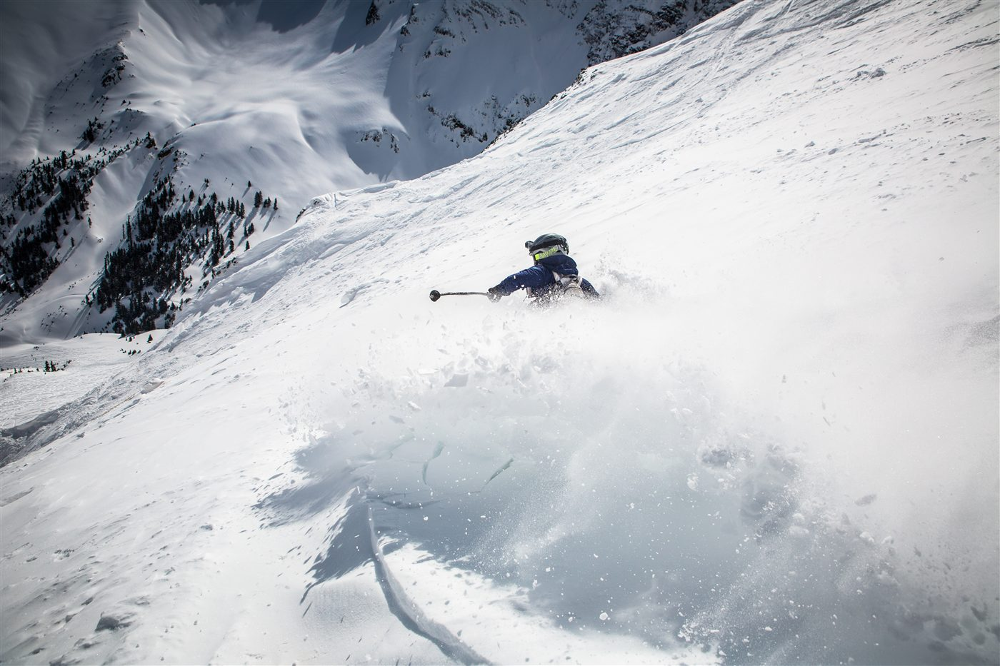
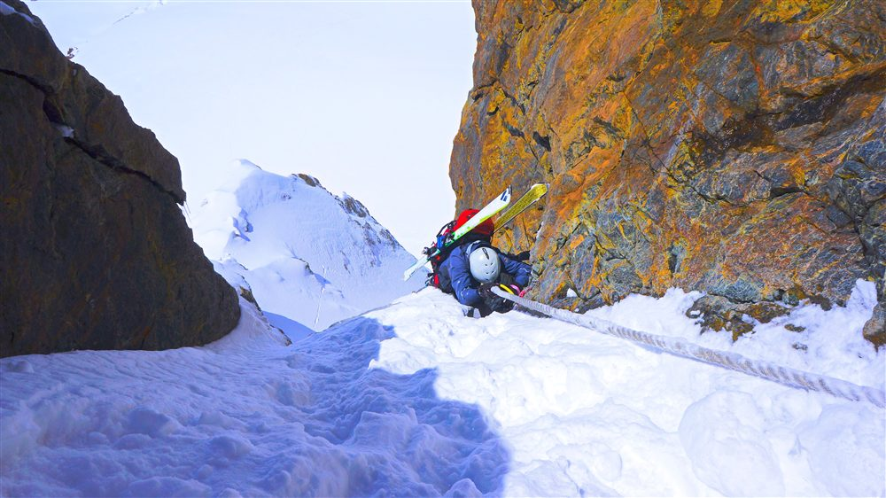
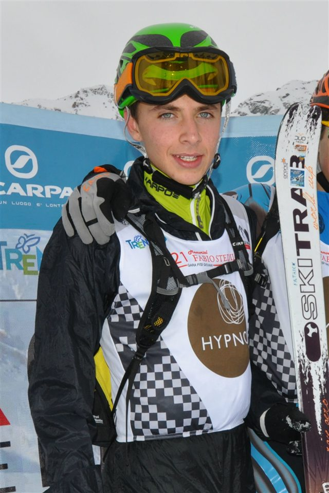
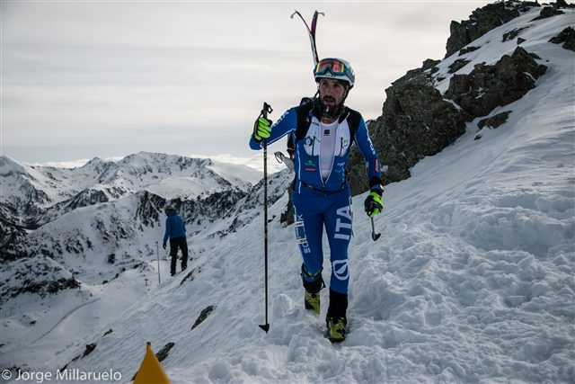
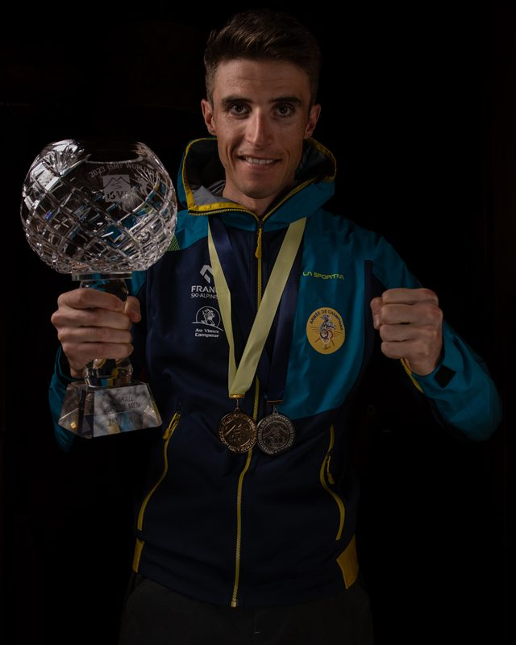
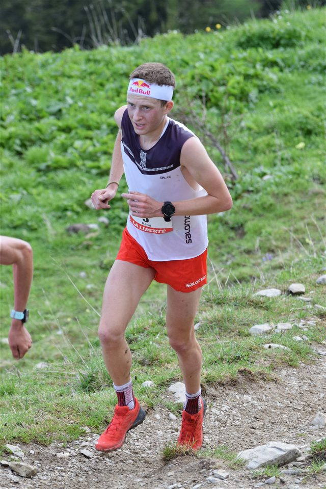
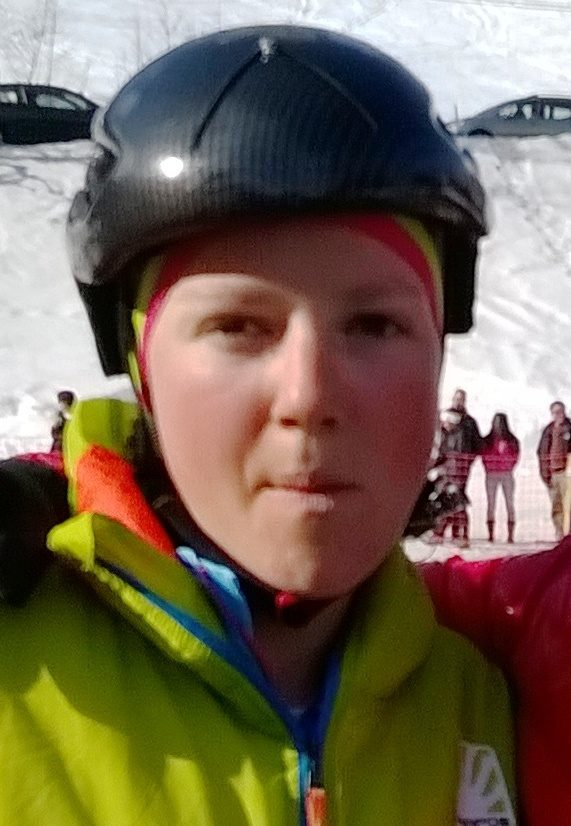

La montée
On grimpe skis aux pieds grâce aux peaux antirecul collées sous la semelle.

2026
Première aux Jeux
~3 min
Durée d'un sprint
80 m
Dénivelé du sprint
Le ski-alpinisme (ou « skimo ») fait son entrée olympique en 2026. Né de la course en montagne, il consiste à monter puis descendre un parcours alpin le plus vite possible, en alternant skis aux pieds, portage et descente technique.
Aux Jeux, c'est le format sprint qui est retenu : une course explosive d'environ trois minutes. On grimpe sur des skis équipés de peaux antirecul, on les enlève en quelques secondes (la « conversion »), on porte les skis sur une portion à pied, puis on bascule en descente. Vitesse et dextérité font tout.
L'Espagnol Kilian Jornet, monstre de l'endurance en montagne, a popularisé la discipline dans le monde entier.

On grimpe skis aux pieds grâce aux peaux antirecul collées sous la semelle.
Sur les sections trop raides, on fixe les skis sur le sac et on grimpe à pied, crampons aux bottes.
Retirer les peaux, verrouiller les fixations et repartir : ces transitions se jouent en secondes.
Place au pilotage : une descente rapide et propre sur un matériel ultraléger.
Le format olympique : ~3 minutes d'effort total, en séries puis finale, sur un mini-parcours.
Deux hommes et deux femmes par nation se relaient : l'épreuve collective des Jeux.
Lieu
Bormio — Valteline (stade de ski-alpinisme)
Capacité
≈ 5 000 places le long du parcours
Accès
Navettes JO depuis Bormio centre. Site partagé avec le ski alpin.
Billet
À partir de 30 € · 75 € (finales sprint)
Température
Haute montagne — prévoir -8 °C, jusqu'à 2 000 m d'altitude

 Italie
Italie
Italie
 France
France

France